Logan Guild / Case studies
JetBlue, Southwest, and Delta Performance Analysis
16 pages. Read below without downloading. Select a page image to enlarge it.
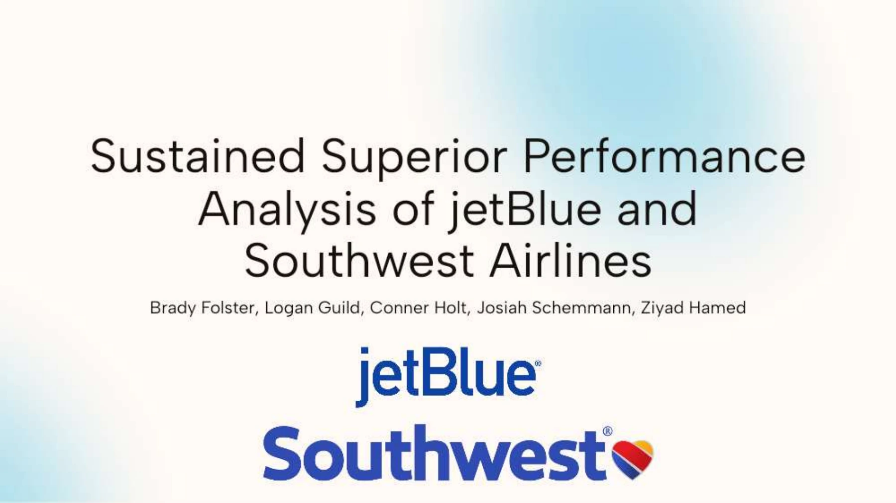
Page 1 text
Sustained Superior Performance Analysis of jetBlue and Southwest Airlines Brady Folster, Logan Guild, Conner Holt, Josiah Schemmann, Ziyad Hamed
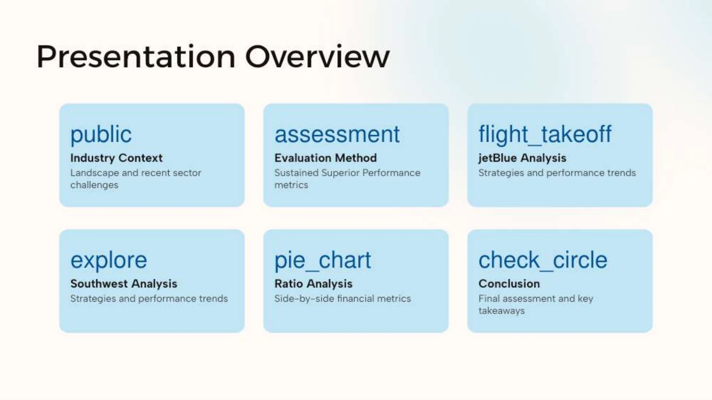
Page 2 text
Presentation Overview public Industry Context Landscape and recent sector challenges assessment Evaluation Method Sustained Superior Performance metrics flight_takeoff jetBlue Analysis Strategies and performance trends explore Southwest Analysis Strategies and performance trends pie_chart Ratio Analysis Side-by-side financial metrics check_circle Conclusion Final assessment and key takeaways
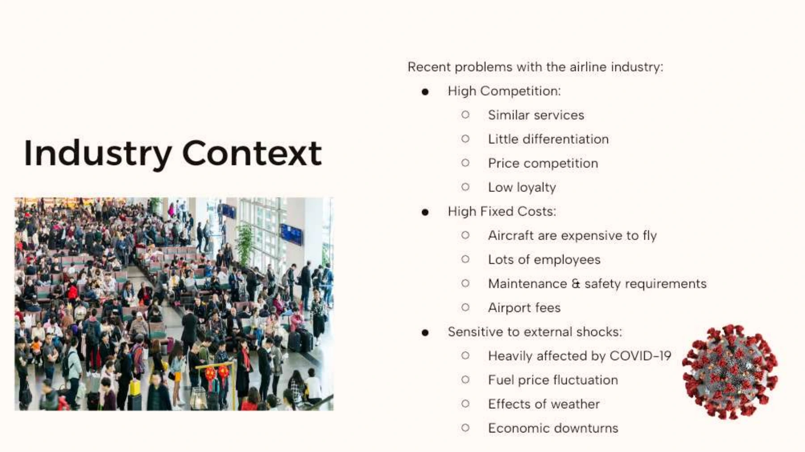
Page 3 text
Industry Context Recent problems with the airline industry: High Competition: Similar services Little differentiation Price competition Low loyalty High Fixed Costs: Aircraft are expensive to fly Lots of employees Maintenance & safety requirements Airport fees Sensitive to external shocks: Heavily affected by COVID-19 Fuel price fluctuation Effects of weather Economic downturns
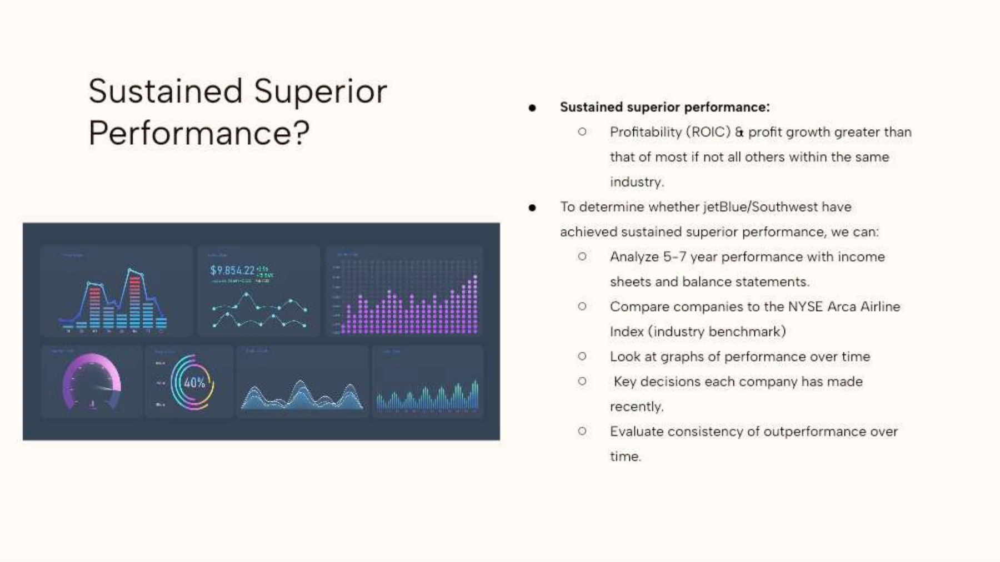
Page 4 text
Sustained Superior Performance? Sustained superior performance: Profitability (ROIC) & profit growth greater than that of most if not all others within the same industry. To determine whether jetBlue/Southwest have achieved sustained superior performance, we can: Analyze 5-7 year performance with income sheets and balance statements. Compare companies to the NYSE Arca Airline Index (industry benchmark) Look at graphs of performance over time Key decisions each company has made recently. Evaluate consistency of outperformance over time.
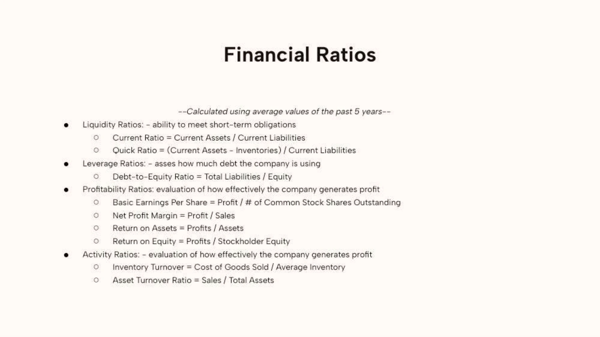
Page 5 text
Financial Ratios --Calculated using average values of the past 5 years-- Liquidity Ratios: - ability to meet short-term obligations Current Ratio = Current Assets / Current Liabilities Quick Ratio = (Current Assets - Inventories) / Current Liabilities Leverage Ratios: - asses how much debt the company is using Debt-to-Equity Ratio = Total Liabilities / Equity Profitability Ratios: evaluation of how effectively the company generates profit Basic Earnings Per Share = Profit / # of Common Stock Shares Outstanding Net Profit Margin = Profit / Sales Return on Assets = Profits / Assets Return on Equity = Profits / Stockholder Equity Activity Ratios: - evaluation of how effectively the company generates profit Inventory Turnover = Cost of Goods Sold / Average Inventory Asset Turnover Ratio = Sales / Total Assets
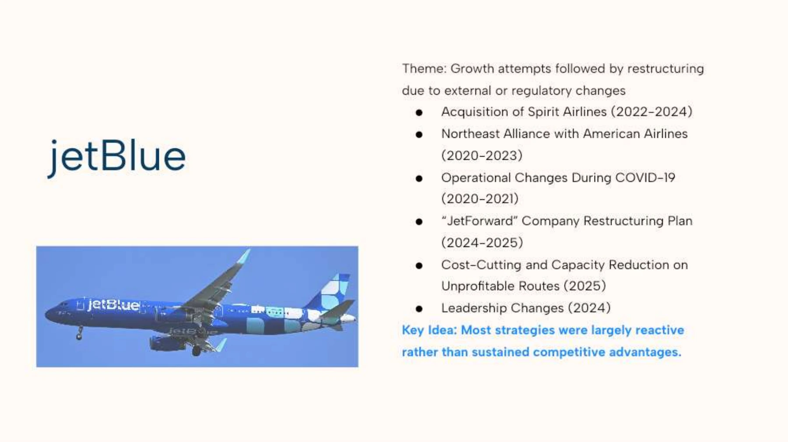
Page 6 text
jetBlue Theme: Growth attempts followed by restructuring due to external or regulatory changes Acquisition of Spirit Airlines (2022-2024) Northeast Alliance with American Airlines (2020-2023) Operational Changes During COVID-19 (2020-2021) “JetForward” Company Restructuring Plan (2024-2025) Cost-Cutting and Capacity Reduction on Unprofitable Routes (2025) Leadership Changes (2024) Key Idea: Most strategies were largely reactive rather than sustained competitive advantages.
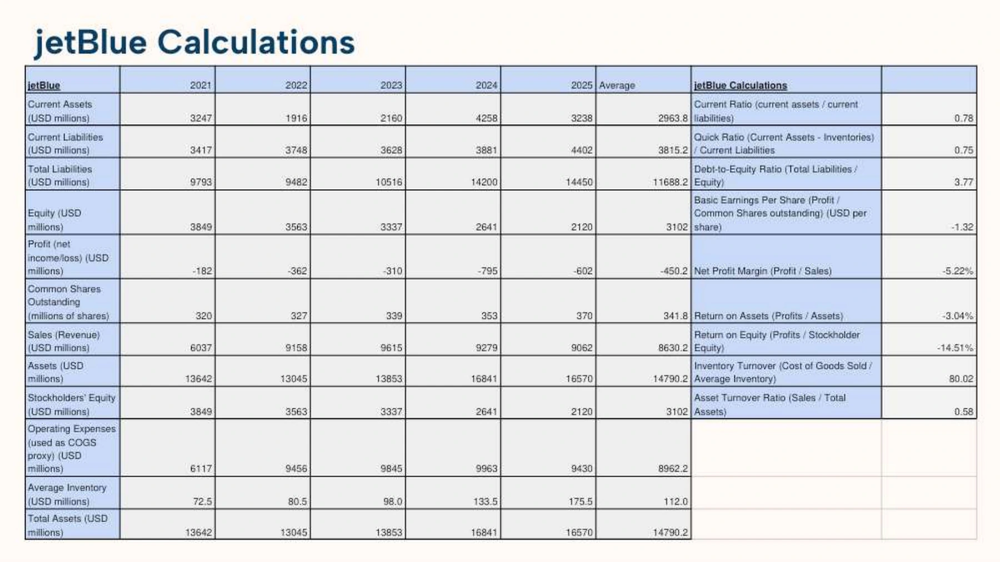
Page 7 text
jetBlue Calculations All the ratios jetBlue 2021 2022 2023 2024 2025 Average jetBlue Calculations Current Assets (USD millions) 3247 1916 2160 4258 3238 2963.8 Current Ratio (current assets / current liabilities) 0.78 Current Liabilities (USD millions) 3417 3748 3628 3881 4402 3815.2 Quick Ratio (Current Assets - Inventories) / Current Liabilities 0.75 Total Liabilities (USD millions) 9793 9482 10516 14200 14450 11688.2 Debt-to-Equity Ratio (Total Liabilities / Equity) 3.77 Equity (USD millions) 3849 3563 3337 2641 2120 3102 Basic Earnings Per Share (Profit / Common Shares outstanding) (USD per share) -1.32 Profit (net income/loss) (USD millions) -182 -362 -310 -795 -602 -450.2 Net Profit Margin (Profit / Sales) -5.22% Common Shares Outstanding (millions of shares) 320 327 339 353 370 341.8 Return on Assets (Profits / Assets) -3.04% Sales (Revenue) (USD millions) 6037 9158 9615 9279 9062 8630.2 Return on Equity (Profits / Stockholder Equity) -14.51% Assets (USD millions) 13642 13045 13853 16841 16570 14790.2 Inventory Turnover (Cost of Goods Sold / Average Inventory) 80.02 Stockholders' Equity (USD millions) 3849 3563 3337 2641 2120 3102 Asset Turnover Ratio (Sales / Total Assets) 0.58 Operating Expenses (used as COGS proxy) (USD millions) 6117 9456 9845 9963 9430 8962.2 Average Inventory (USD millions) 72.5 80.5 98.0 133.5 175.5 112.0 Total Assets (USD millions) 13642 13045 13853 16841 16570 14790.2
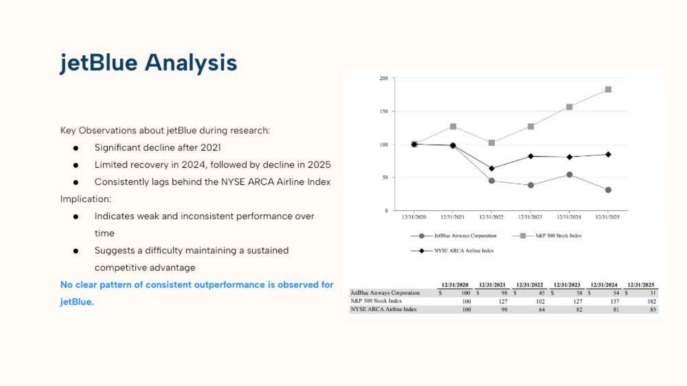
Page 8 text
jetBlue Analysis Key Observations about jetBlue during research: Significant decline after 2021 Limited recovery in 2024, followed by decline in 2025 Consistently lags behind the NYSE ARCA Airline Index Implication: Indicates weak and inconsistent performance over time Suggests a difficulty maintaining a sustained competitive advantage No clear pattern of consistent outperformance is observed for jetBlue.
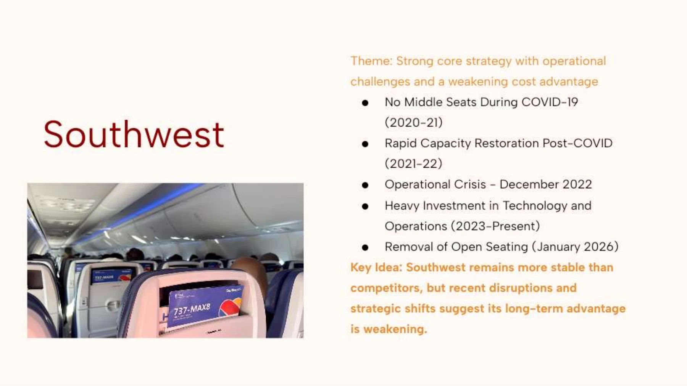
Page 9 text
Southwest Theme: Strong core strategy with operational challenges and a weakening cost advantage No Middle Seats During COVID-19 (2020-21) Rapid Capacity Restoration Post-COVID (2021-22) Operational Crisis - December 2022 Heavy Investment in Technology and Operations (2023-Present) Removal of Open Seating (January 2026) Key Idea: Southwest remains more stable than competitors, but recent disruptions and strategic shifts suggest its long-term advantage is weakening.
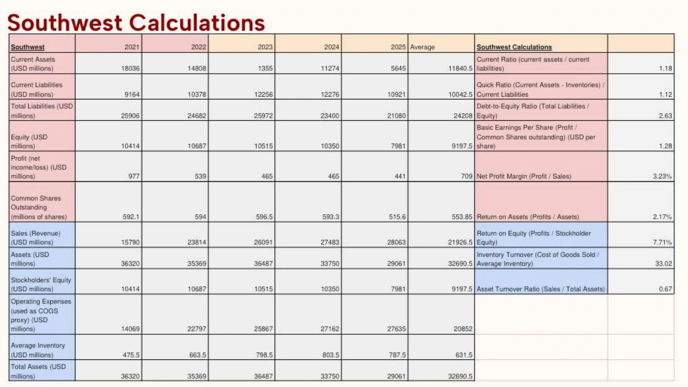
Page 10 text
Southwest Calculations Southwest 2021 2022 2023 2024 2025 Average Southwest Calculations Current Assets (USD millions) 18036 14808 1355 11274 5645 11840.5 Current Ratio (current assets / current liabilities) 1.18 Current Liabilities (USD millions) 9164 10378 12256 12276 10921 10042.5 Quick Ratio (Current Assets - Inventories) / Current Liabilities 1.12 Total Liabilities (USD millions) 25906 24682 25972 23400 21080 24208 Debt-to-Equity Ratio (Total Liabilities / Equity) 2.63 Equity (USD millions) 10414 10687 10515 10350 7981 9197.5 Basic Earnings Per Share (Profit / Common Shares outstanding) (USD per share) 1.28 Profit (net income/loss) (USD millions) 977 539 465 465 441 709 Net Profit Margin (Profit / Sales) 3.23% Common Shares Outstanding (millions of shares) 592.1 594 596.5 593.3 515.6 553.85 Return on Assets (Profits / Assets) 2.17% Sales (Revenue) (USD millions) 15790 23814 26091 27483 28063 21926.5 Return on Equity (Profits / Stockholder Equity) 7.71% Assets (USD millions) 36320 35369 36487 33750 29061 32690.5 Inventory Turnover (Cost of Goods Sold / Average Inventory) 33.02 Stockholders' Equity (USD millions) 10414 10687 10515 10350 7981 9197.5 Asset Turnover Ratio (Sales / Total Assets) 0.67 Operating Expenses (used as COGS proxy) (USD millions) 14069 22797 25867 27162 27635 20852 Average Inventory (USD millions) 475.5 663.5 798.5 803.5 787.5 631.5 Total Assets (USD millions) 36320 35369 36487 33750 29061 32690.5
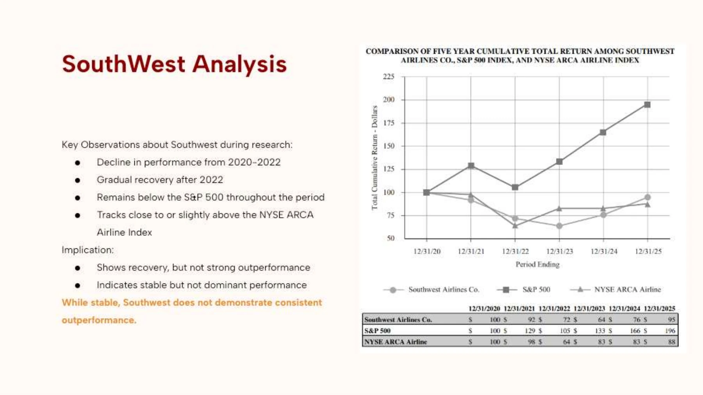
Page 11 text
SouthWest Analysis Key Observations about Southwest during research: Decline in performance from 2020-2022 Gradual recovery after 2022 Remains below the S&P 500 throughout the period Tracks close to or slightly above the NYSE ARCA Airline Index Implication: Shows recovery, but not strong outperformance Indicates stable but not dominant performance While stable, Southwest does not demonstrate consistent outperformance.
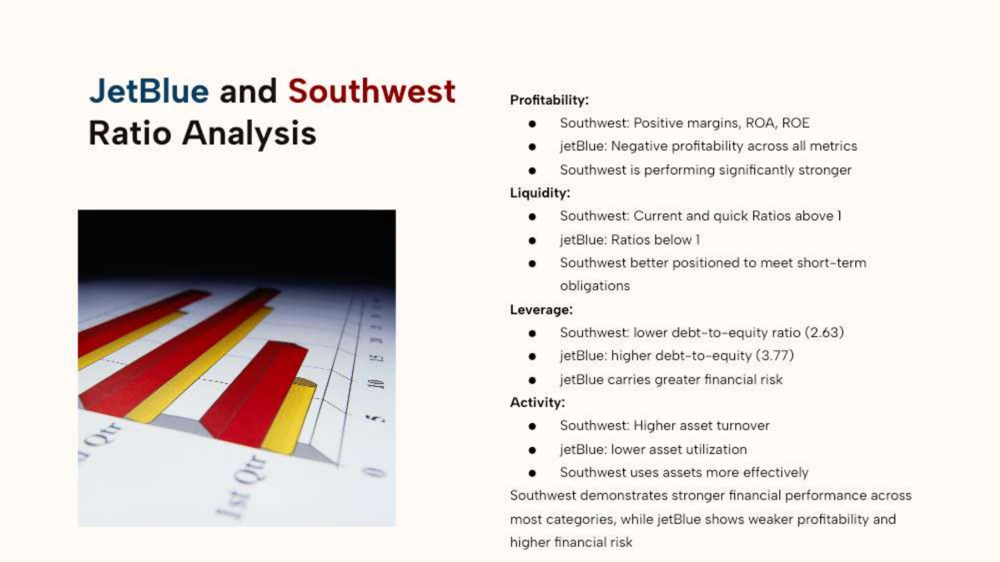
Page 12 text
JetBlue and Southwest Ratio Analysis Profitability: Southwest: Positive margins, ROA, ROE jetBlue: Negative profitability across all metrics Southwest is performing significantly stronger Liquidity: Southwest: Current and quick Ratios above 1 jetBlue: Ratios below 1 Southwest better positioned to meet short-term obligations Leverage: Southwest: lower debt-to-equity ratio (2.63) jetBlue: higher debt-to-equity (3.77) jetBlue carries greater financial risk Activity: Southwest: Higher asset turnover jetBlue: lower asset utilization Southwest uses assets more effectively Southwest demonstrates stronger financial performance across most categories, while jetBlue shows weaker profitability and higher financial risk
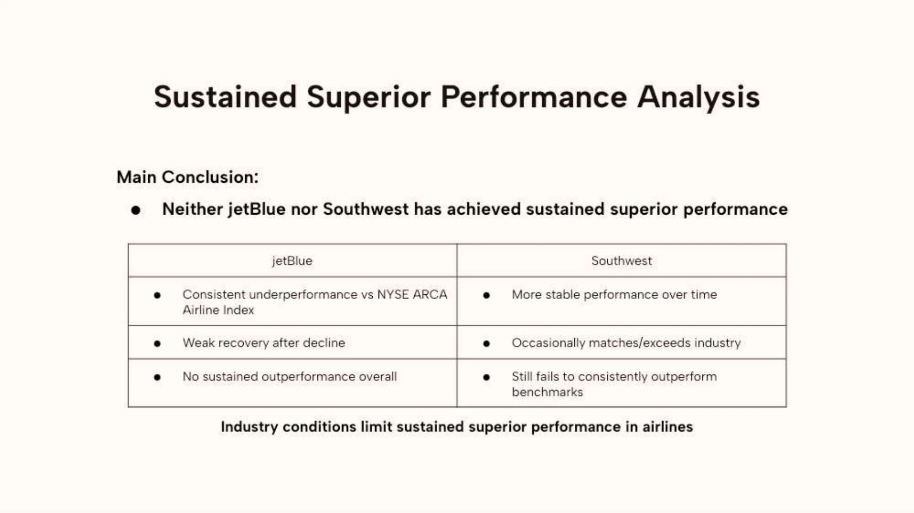
Page 13 text
Sustained Superior Performance Analysis Main Conclusion: Neither jetBlue nor Southwest has achieved sustained superior performance jetBlue Southwest Consistent underperformance vs NYSE ARCA Airline Index More stable performance over time Weak recovery after decline Occasionally matches/exceeds industry No sustained outperformance overall Still fails to consistently outperform benchmarks Industry conditions limit sustained superior performance in airlines
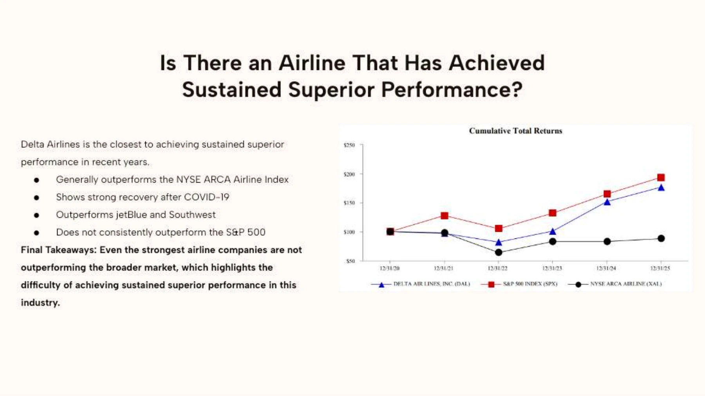
Page 14 text
Is There an Airline That Has Achieved Sustained Superior Performance? Delta Airlines is the closest to achieving sustained superior performance in recent years. Generally outperforms the NYSE ARCA Airline Index Shows strong recovery after COVID-19 Outperforms jetBlue and Southwest Does not consistently outperform the S&P 500 Final Takeaways: Even the strongest airline companies are not outperforming the broader market, which highlights the difficulty of achieving sustained superior performance in this industry.
Page 15 text
Thank you Questions?
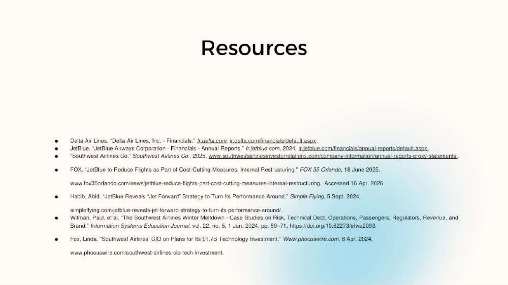
Page 16 text
Delta Air Lines. “Delta Air Lines, Inc. - Financials.” Ir.delta.com, ir.delta.com/financials/default.aspx. JetBlue. “JetBlue Airways Corporation - Financials - Annual Reports.” Ir.jetblue.com, 2024, ir.jetblue.com/financials/annual-reports/default.aspx. “Southwest Airlines Co.” Southwest Airlines Co., 2025, www.southwestairlinesinvestorrelations.com/company-information/annual-reports-proxy-statements. FOX. “JetBlue to Reduce Flights as Part of Cost-Cutting Measures, Internal Restructuring.” FOX 35 Orlando, 18 June 2025. www.fox35orlando.com/news/jetblue-reduce-flights-part-cost-cutting-measures-internal-restructuring. Accessed 16 Apr. 2026. Habib, Abid. “JetBlue Reveals “Jet Forward” Strategy to Turn Its Performance Around.” Simple Flying, 5 Sept. 2024, simpleflying.com/jetblue-reveals-jet-forward-strategy-to-turn-its-performance-around/. Witman, Paul, et al. “The Southwest Airlines Winter Meltdown - Case Studies on Risk, Technical Debt, Operations, Passengers, Regulators, Revenue, and Brand.” Information Systems Education Journal, vol. 22, no. 5, 1 Jan. 2024, pp. 59–71, https://doi.org/10.62273/efwa2093. Fox, Linda. “Southwest Airlines’ CIO on Plans for Its $1.7B Technology Investment.” Www.phocuswire.com, 8 Apr. 2024, www.phocuswire.com/southwest-airlines-cio-tech-investment. Resources